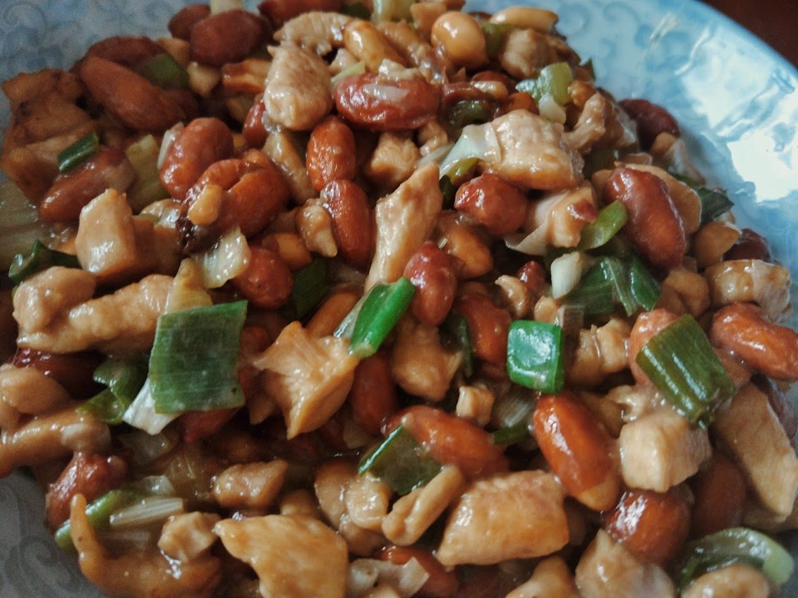
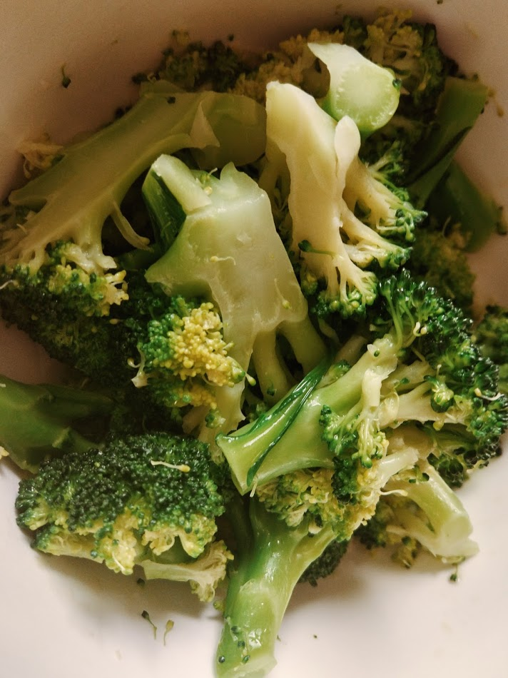

老爸老妈教我做的菜
C.Y.Xu
9月 17, 2016
我家有两个大厨，做饭超级好吃，不能让手艺在我这里失传呀！以下就是他们教我做饭的过程记录。。。
宫保鸡丁
食材
- 鸡胸肉
- 酥花生 我爸: 哎呀你酥不来花生，对你太有难度了，还是直接买炸好的
- 大葱
- 豆瓣酱 我爸：一定要买四川郫县豆瓣
- 豆粉 我：就是淀粉嘛
- 白糖
- 醋
- 香油
- 盐
- 干辣椒筒 我爸：正宗的宫保鸡丁要加辣椒，你室友不吃辣就算了
做法
- 鸡肉、大葱切丁 我爸：丁就是小拇指最顶头那一段的一半大小 (⊙﹏⊙)
- 把鸡肉丁放到盘子里，加淀粉、白糖、豆瓣酱、盐适量，拌匀
- 点火，倒香油 我爸：一定要等锅辣了再倒油，锅辣了就是说你拿手放到锅上方比较有热度了，锅里没水了的时候。另外油要能铺满锅底。
- 等油熟了我爸：就是开始冒青烟了， 开始加鸡丁，翻炒 我：此处有大量溅起来的油！！下次请小心
- 等鸡肉差不多都变色了加干辣椒，炒炒加醋 我爸：你多倒了醋没事，就加糖。反正酸了就加糖 甜了就加醋😒
- 再炒炒加大葱丁，炒炒炒
- 关火，加花生，炒炒炒，我爸：好！起锅！
味道总结
糖醋味，加了辣椒就还有辣味，很好吃。

凉拌西兰花
食材
- 西兰花
- 蒜 我爸: 一瓣就够了
- 盐
- 芝麻油
做法
- 西兰花切成正常的样子
- 蒜剥出来，用刀面pia地拍扁！然后再切碎一点
- 点火，加很多水
- 水开了以后加入西兰花煮 我爸：一定要水开了再加西兰花
- 等水再次开了，等一两分钟，关火捞西兰花
- 加入蒜泥，盐适量，拌匀
- 加入芝麻油 我爸：可以多加点，比较香，拌匀，完成！
味道总结
盐放少了会很淡，别问我怎么知道的，很清爽，很简单。
